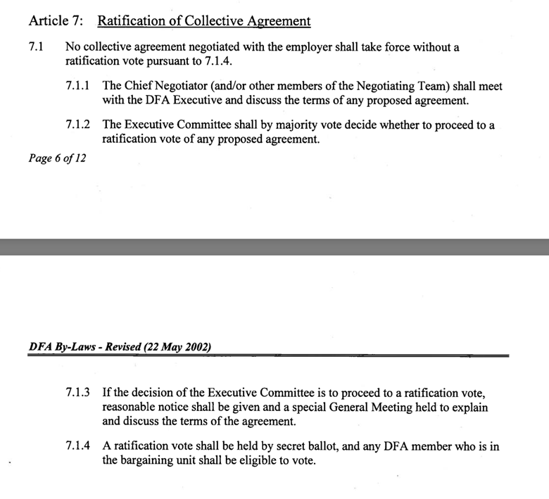
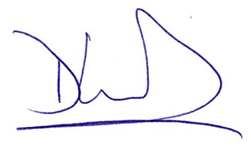

President’s Message
Dave Westwood, DFA President
Good morning colleagues,
We are about to enter week 3 of the lockout and the Board continues to ignore our demand to return to the bargaining table to resolve our remaining proposals and conclude a new collective agreement. We have not heard back on the next steps for our bargaining complaint against the Board but that will likely take some time to process. So what comes next?
Our next step is to continue increasing the pressure on the Board to return to the bargaining table. There is rapidly increasing pressure now that the majority of students have returned to campus, and it has now become crystal clear that classes will not start on time and are likely to be delayed by at least a week even if an agreement could be reached today. Those of you who teach in accredited programs like Nursing know that there is little room for compression or disruption to the Fall teaching schedule before serious knock-on effects emerge that put not only the Fall semester in jeopardy but the entire academic year.
Last week our DFA Bargaining Team and Executive Team agreed that we should continue negotiations rather than accepting the Board’s so-called offer to jointly agree to an interest arbitration that would focus exclusively on the issue of the IMC (i.e., wages) and require us to abandon all DFA proposals still on the table. As a reminder, our remaining proposals include: expanding access to childcare; increased parental leave top-ups; converting limited term appointments that have been already renewed for 5 years into career-stream appointments; and increased Health Spending Account.
The Board’s rationale for summarily rejecting these proposals is that they cannot afford the associated costs. I would like to point out that the conversion of long-term LTAs into career-stream appointments would cost very little since salary scales are the same for LTA and career-stream appointments. Such conversions would save a lot of time and work for DFA Members since search committees could focus on other duties instead of regularly reviewing and interviewing people for reappointment. Increasing parental-leave top-ups would also cost very little because (1) very few DFA Members access the benefit each year, (2) the increased benefit would only be for a few months, and (3) the benefit is a top-up that sits on the benefits already provided through the Employment Insurance (EI) program.
Some of you have reached out to ask why DFA leadership did not bring the question of interest arbitration to a full vote of the membership. Such a vote would have been a ratification vote, since agreeing to the Board’s proposal would have concluded collective bargaining. The decision to proceed to a ratification vote rests with the Executive Committee, per our bylaws (Article 7; Clause 7.1.2): https://immediac.blob.core.windows.net/dfa2021/images/WP-content/uploads/2011/03/DFA.Bylaws.pdf

The Executive Committee considered and ultimately rejected the idea of conducting a ratification vote. When there is a new offer from the Board the Bargaining Team and Executive Committee will again turn their minds to the question of whether or not to conduct a ratification vote.
It is worth noting that at no point has the topic of a return-to-work protocol been discussed or negotiated by the parties. This key issue would need to be resolved before a work stoppage could be concluded – the Board’s repeated assertions to students that classes could resume quickly once an agreement is reached is not within their power to dictate.
Many Members and students have asked how long it might take for classes to resume once a deal is reached. As noted above, a return-to-work protocol is something negotiated between the parties along with the collective agreement itself. Our bylaws provide that a return-to-work protocol must respect the time necessary to prepare for a return to regular duties after a work stoppage, and that the membership must have the opportunity to hear about and indeed vote on both the tentative agreement and the return-to-work protocol. While the bylaws state that a minimum of 24 hours shall be required to return to work after agreeing to conclude a stoppage, we will obviously require considerably more than this because the Board’s ill-advised lockout prevented us from several weeks of much-needed preparation time for our classes, labs, and other academic activities.
I look forward to joining you all on our freshly constituted and greatly expanded picket lines both in Halifax and Truro in the coming week. We must keep our spirits up, and stay strong. The balance of pressure has tipped heavily into our favour as the Board now has to confront directly the mounting costs and consequences of each day that classes are delayed. Thus far the Board has been able to save money by withholding our wages with relatively little consequence, but that is about to change dramatically as they must now seriously consider the financial consequences of student withdrawals and demands for tuition refunds. As grant application deadlines also rapidly approach, there is the further risk of a serious loss of grant capture and the loss of associated revenue from the indirect costs of research program. I would like to point out that the Board could fund almost all of our remaining proposals out of the savings already realized from withholding our salaries during their lockout, so it is no longer defensible for them to refuse our demands on the grounds of affordability – this was not true before the lockout and it is even further from the truth now.
We look forward to seeing you at our third lockout rally this Friday and welcoming back our friends and colleagues from the CAUT Flying Pickets and other local unions and labour leaders who will join us. The rally is scheduled for Friday, September 5 at 12 noon in front of the Killam Library.
In solidarity,

Dave Westwood
DFA President 2025-2026